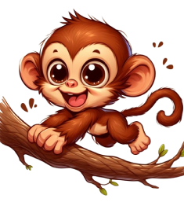

Explore a diversidade fascinante dos animais selvagens, cada um vital para os ecossistemas;
Descubra os segredos dos seus habitats e comportamentos intrigantes, mergulhando na vida selvagem.
ANIMAIS SILVESTRES
LEÃO
•Majestoso e poderoso.
• Vivem em grupos
• As Jubas dizem a idade dos leões
• passam a maior parte do dia descansando.
MACACO

• Ágil e sociável.
• Adoram Banana
• vivem em grupos
• inteligentes e adaptáveis.
ELEFANTE
• Têm uma memória excelente
• São os maiores animais terrestres
•Usam suas trombas para uma variedade de tarefas
ZEBRA
• Listrada e ágil.
• têm uma excelente audição e visão
• As listras servem como camuflagem e também para espantar insetos.
ARARA AZUL
• Colorida e barulhenta.
• Têm os bicos fortes para quebrar e descascar sementes
• Voam em pares ou grupos